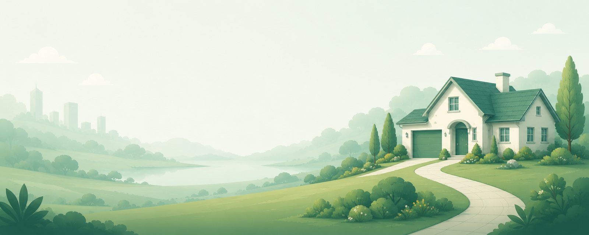
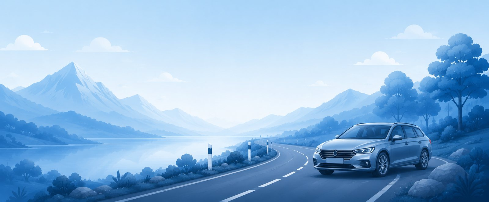
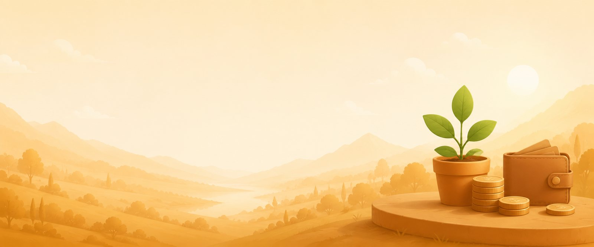

Bydlení, auto i rozpočet na jednom místě. Přehledně, společně, s klidem — a teď i s pozadím, které dýchá jako lávová lampa.
0společné sekce
0nemovitostí ve výběru
0Kčměsíční rozpočet

Naše Bydleníčko
Nemovitosti, které spolu zvažujeme — skóre, dojezdy a hypotéka vedle sebe, bez rozkopírovaných odkazů.
Plánujeme náš domov
Naše Autíčko
Auta z Česka i dovoz z EU v jednom přehledu — ceny v korunách, náklady na provoz a skóre výhodnosti.
Vybíráme chytře
Naše Hospodařeníčko
Měsíční rozpočet, spořicí cíle a denní limit — čísla, která uklidňují, ne straší.
Držíme rozpočet